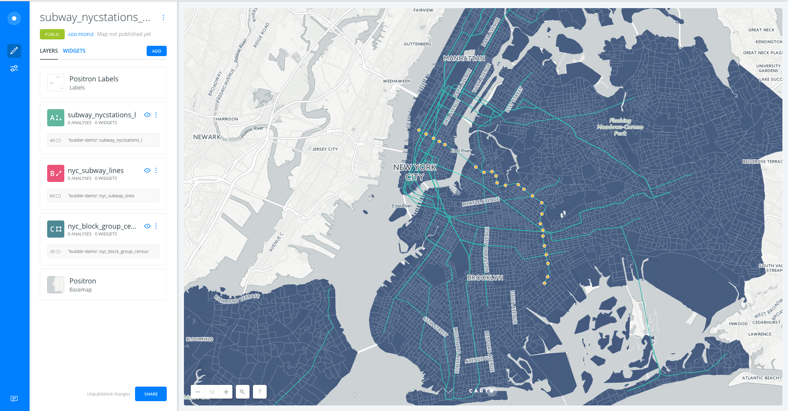
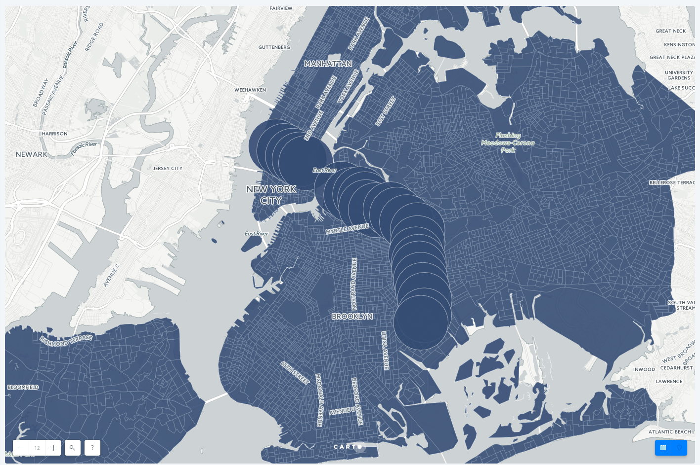
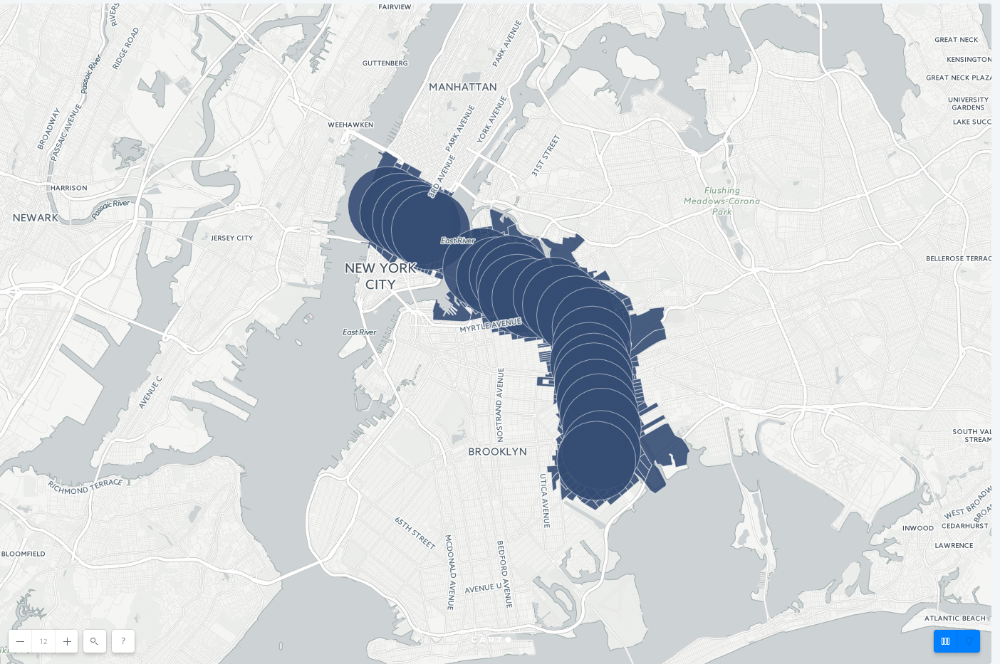
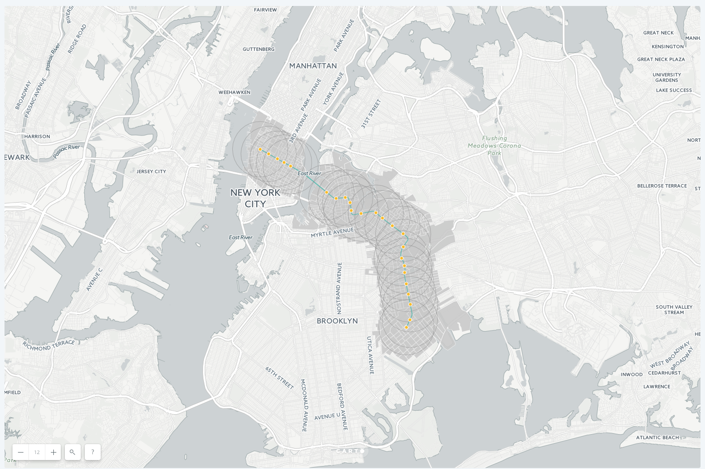

The closing of the L line and NYC demographics
We will need the following datasets for this exercise:
- New York subway stations:
subway_nycstations_l. - New York subway lines:
nyc_subway_lines. - New York block group census:
nyc_block_group_census.
1. Create a map
- Click on
NEW MAP. - Click on
CONNECT DATASET. - Drag and drop
subway_nycstations_l.gpkg. - Click on
CONNECT DATASET. - Click on
Don't show me this againto avoid modals. - You can rename the map title as "The L line and demographics" by double-clicking on it.

2. Layers
- Add new layers:
- Click on
ADD. - Clik on
UPLOAD. - Find
nyc_subway_lines.gpkgon your computre and click onUPLOAD DATASET. - Click on
ADD LAYER. -
Reapeat the same for
nyc_block_group_census.csv -
Now, by moving the layers using drag and drop we can change the order in which the layers are being displayed. We move
subway_nycstations_lto the top andnyc_subway_linesin the second position. The layernyc_block_group_censuswoudl stay at the bottom of the map.

- Click on one of the layers to show its components:
DATAtab: an overview of your table schema, from here you can also add widgets. If you want to have a look at your dataset, click the Data View icon, located on the bottom right of Builder when a map layer is selected.

Take a look at the letter and number the layers card has (A, B or C). This would be very useful for adding widgets and analysis. Depending on the order in which you added your data, your layer letters could be different than the screenshots. In this example, subway stations were layer A, subway lines layer B, and block groups layer C.

3. Analysis
3.1 Filter by column value
- Go to the edit pane.
- Click layer
nyc_subway_linesand then select theAnalysistab. Finally, click on theADD ANALYSISbutton in order to add the analysis. - Select
Filter by column valueanalysis. - Click on
ADD ANALYSIS. - Set the parameters as follows:
TARGET COLUMN:route_id.VALUE:L.RESULTS:show.- Now click on
APPLYto see the result of the filtering. This is the L subway line.

3.2 Create Travel/Distance buffer analysis
- We will apply this analysis to the layer
subway_nycstations_l. Go back to the LAYERS pane in Builder's interface and click on0 ANALYSESunder subway_nycstations_l. Click onANALYSIS, then onADD ANALYSIS. - Select the Create Travel/Distance buffer analysis. Click
ADD ANALYSIS. - In the ANALYSIS tab of the layer, we have three sections:
- Your workflow: Since this is the first analysis we're adding to the
subway_nycstations_llayer, node A, the analysis layer will be named node A1. - Create areas of influence:
- BASE LAYER: Should be the layer
subway_nycstations_l, node A (A0). - TYPE: Distance
- UNIT: mi
- RADIUS: 1
- TRACKS: 1
- BOUNDARIES: Intact
- BASE LAYER: Should be the layer
- After clicking APPLY, we should see this result: an area of influence of 1 mile around each subway station.

3.3 Intersect and Aggregate analysis
- Go to the edit pane.
- Click layer
nyc_block_group_censusand then select theAnalysistab. Finally, click on theADD ANALYSISbutton in order to add the analysis. - Select
Intersect and aggregateanalysis. - In the ANALYIS tab of the layer, we have three sections:
- Your workflow: Since this is the first analysis we're adding to the
nyc_block_group_censuslayer, node C, this analysis layer will be named node C1. - Aggregate intersection:
- Base Layer: By default the base layer would be
nyc_block_group_census. - Target Layer: select the result layer of the Area of Influence analysis A1
- Base Layer: By default the base layer would be
- After clicking APPLY, we should see this result:

3.4 Extract source node and reorder layers
Since we used our subway station layer as the input for the buffers analysis, the data appears as polygons. We want the buffers to be underneath the subway lines, and to extract the original subway station points for display.
- From the
subway_stations_llayer, drag out the buffers sublayer and place it under thenyc_subway_lineslayer - This will create a new layer D, and you will see the subway stations drawn on top of the AOI and block group layers

4. Styling
-
Go to the edit pane, click on the
AOIlayer D and select theSTYLEtab. Set theFillcolor to a grey with high opacity, and make the stroke grey also. -
Go to the edit pane, click on the
nyc_block_group_censuslayer D and select theSTYLEtab. Set theFillcolor to a grey that blends with the basemap layer.

5. Widgets
- Go to the edit pane and click on the
widgetstab. - Click on
ADD WIDGETbutton. - Under the
CATEGORYtab, click on the check box of variablesstop_nameandethnic_1st - Under the 'HISTOGRAM' tab, click on the check box of variables
median_household_incomeandmedian_age - Under the 'FORMULA' tab, click on the check box of variable
total_pop. - Click on
CONTINUE

5.1 Explore and style data with Widgets
- Click on the tear drop icon inside each widget to see the Auto-style feature.
- Filter the data by interacting with the category and histogram widgets.

5.2 Customize widgets
- Reorder widgets: From
WIDGETtab, drag and drop them into your preferred order. - Rename widgets: From
WIDGETtab, rename each widget by clicking on its three blue dots and selecting the option toRename. - Formula widget calculation:
- By default, the formula widget is calculating the average population. However, we want to see the sum of the total population within our map view.
- Click on the three blue dots in the Total Population widget and select the option to 'Edit'
- In the
OPERATIONparameter, selectsum.

6. Publish
- Click on
SHARE. - Set the map's privacy to
LINKorPUBLIC. - Click on
PUBLISH. - Now you can share the map:
- Link: https://team.carto.com/u/builder-demo/builder/144826d6-0982-11e7-bdeb-0e233c30368f/embed
- iframe:
<iframe width="100%" height="520" frameborder="0" src="https://team.carto.com/u/builder-demo/builder/144826d6-0982-11e7-bdeb-0e233c30368f/embed" allowfullscreen webkitallowfullscreen mozallowfullscreen oallowfullscreen msallowfullscreen></iframe>
Remember to update your map every time you make a change. To see those changes refresh your embed, or the web page where your map is hosted.